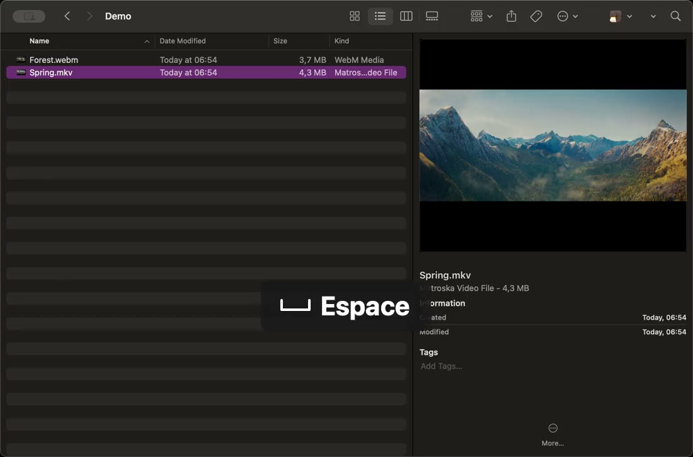

MKV sur Mac
Prévisualiser un fichier MKV sur Mac, d’un simple coup d’Espace
Votre Mac n’affiche pas les fichiers MKV : Quick Look ne montre qu’une icône et le Finder n’a pas de vignette à proposer. VideoGlance ajoute ce qui manque, sans changer vos habitudes.

Image de Spring — © Blender Foundation | cloud.blender.org/spring. CC BY 4.0. Extrait réduit et présenté dans une capture Finder, avec une indication de touche ajoutée. Aucune affiliation avec Blender Foundation.
Pourquoi le Mac n’ouvre pas les MKV ?
MKV, ou Matroska, est un format très répandu pour les films, les séries, les enregistrements de jeux et les vidéos d’OBS Studio. Il peut réunir plusieurs pistes audio, des sous-titres et des chapitres dans un seul fichier.
macOS ne prend pas ce format en charge : QuickTime Player ne l’ouvre pas, et un appui sur Espace dans le Finder n’affiche qu’une grande icône avec le nom et la taille du fichier. Pour savoir ce que contient la vidéo, il faut d’habitude l’ouvrir dans un lecteur séparé.
Voir un MKV avec Quick Look
- Installez VideoGlance, une seule fois.
- Dans le Finder, sélectionnez le fichier MKV.
- Appuyez sur Espace : l’aperçu s’ouvre et la lecture démarre.
Survolez l’image pour afficher les commandes : lecture et pause, recul ou avance de 15 secondes, barre de progression, volume, vitesse et plein écran. Appuyez de nouveau sur Espace, ou sur Échap, pour refermer l’aperçu. Le guide détaille chaque commande.
Des vignettes MKV dans le Finder
Avec VideoGlance, vos fichiers MKV affichent une image de la vidéo dans le Finder, en respectant ses proportions. Le panneau Aperçu, à droite de la fenêtre, permet aussi de lancer la lecture et de parcourir la vidéo grâce à un anneau de progression, sans ouvrir de fenêtre.
Quels MKV sont lus ?
Un fichier MKV peut contenir différents codecs. VideoGlance a été essayé avec les plus courants : vidéo H.264 et HEVC (H.265), y compris en 10 bits, et son AAC, AC-3, E-AC-3 ou FLAC. Les chemins de fichiers avec des espaces, des accents ou des caractères non latins sont pris en charge.
Un MKV qui utilise un codec plus rare peut ne pas s’afficher. La page Formats liste tous les codecs essayés.
Pistes audio et sous-titres
Quick Look sert à jeter un œil : VideoGlance lit la piste audio par défaut du fichier. Le choix d’une autre langue ou de sous-titres n’est pas proposé ; pour cela, ouvrez la vidéo dans votre lecteur habituel.
Et pour regarder le film en entier ?
VideoGlance ne remplace pas votre lecteur vidéo. Le double-clic ouvre toujours l’application de votre choix, par exemple IINA ou VLC. VideoGlance sert à reconnaître une vidéo, la parcourir et vérifier son contenu en quelques secondes, directement depuis le Finder.